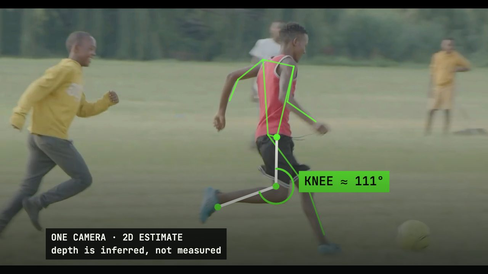
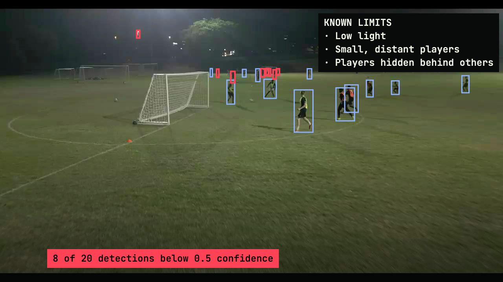
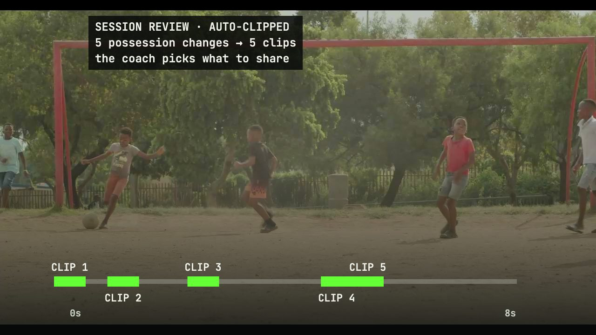
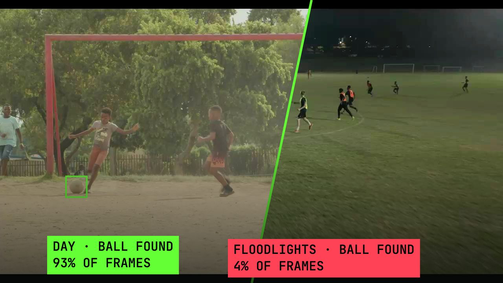
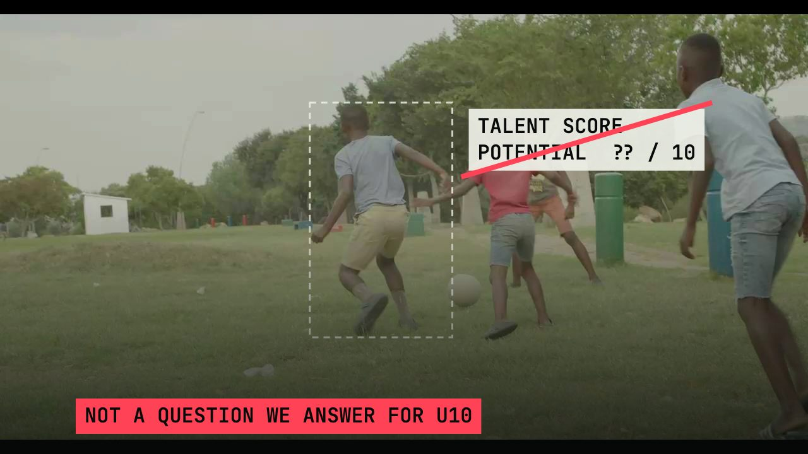
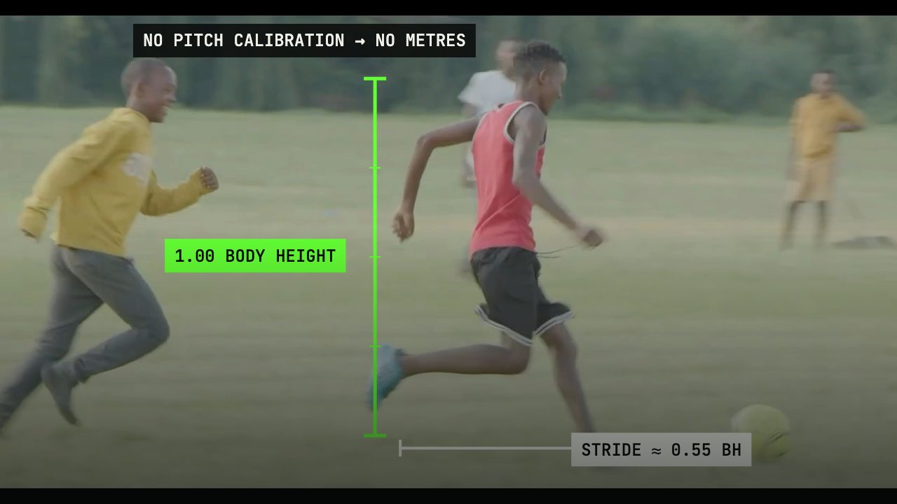

05 / Insights
Better questions. Better intelligence.
Research notes, explainers and project learning — each one labelled with the status of the work it describes.

What a turn tells us — and what it doesn’t. Knee angles from one camera are an estimate. Here is where they help a coach, and where they mislead. Read the note →
Why we publish our limitations. A model that hides its failure modes is a model nobody should trust with young players. Read the note →
Twelve weeks of session review in an academy. What changed for coaches, what didn’t, and the one thing we would do differently. Read the note →
Counting the ball at night. Detection fell from 93% of frames in daylight to 4% under floodlights. What we are testing next. Read the note →
Why we stopped predicting talent at U10. The most-asked question we will not answer — and what we built instead. Read the note →
Body-height units, not metres. Without pitch calibration, metres are a guess. Relative units keep comparisons honest. Read the note →Titles and summaries are placeholders · only approved research is published